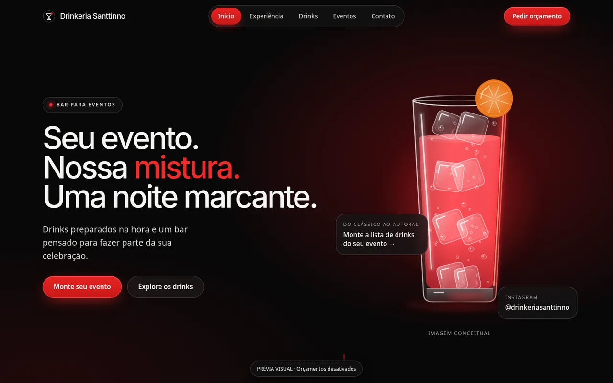
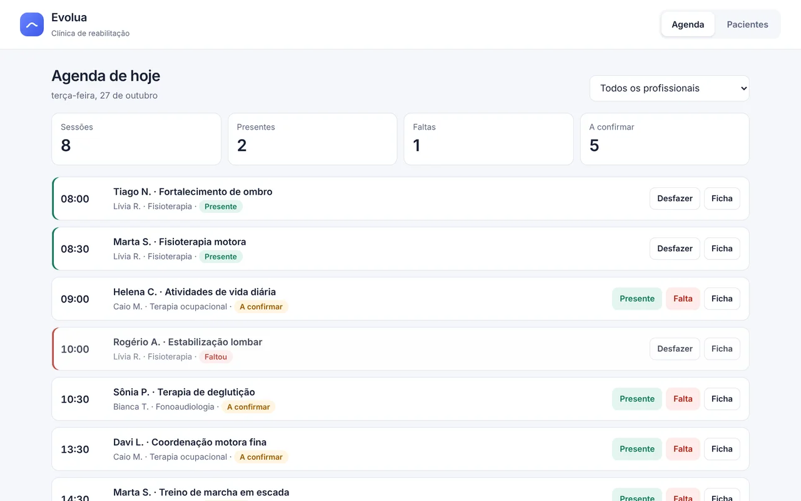
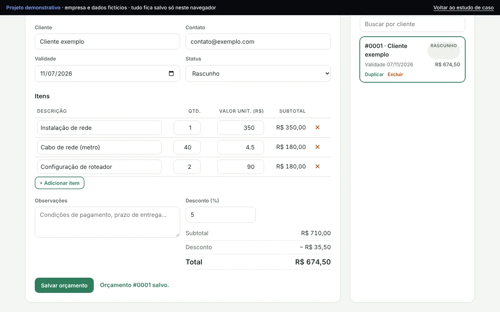
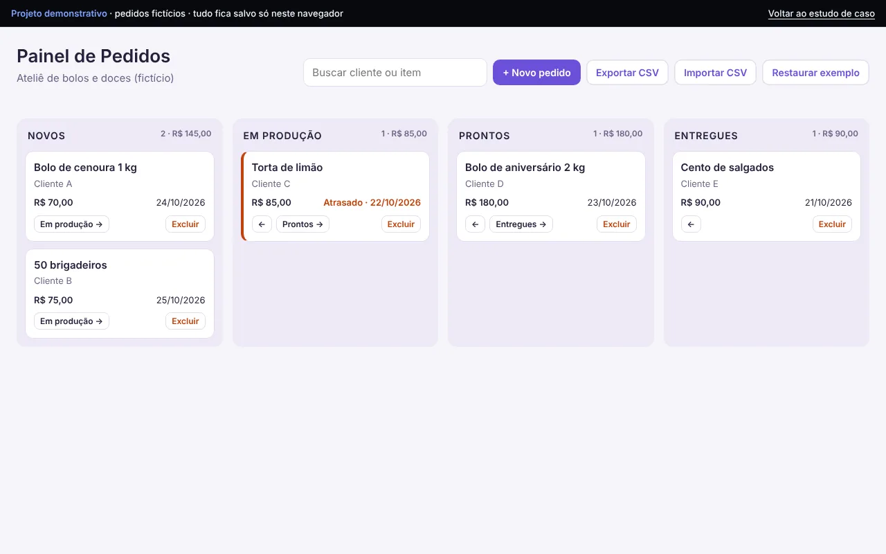

Site + painel administrativo
Drinkeria Santtinno
Site e painel para um bar de eventos: cardápio de drinks, galeria e pedidos de orçamento que o próprio dono gerencia.
Ver projetoSites · Landing pages · Sistemas sob medida
Sites profissionais e landing pages para pequenos negócios e profissionais. Pensados primeiro para o celular, com um caminho curto até o seu WhatsApp.
Serviços
Para comércios locais, prestadores de serviço, profissionais liberais e marcas que estão começando.
Apresenta a empresa, os serviços e o contato em poucas seções bem organizadas.
Indicado para: Empresas e prestadores de serviço
DetalhesUma página com um único objetivo: divulgar uma oferta ou trazer contatos.
Indicado para: Campanhas, lançamentos e anúncios
DetalhesFerramentas no navegador para orçamentos, pedidos e cadastros.
Indicado para: Rotinas que hoje vivem em planilhas
DetalhesTambém: site para negócio local, automações e manutenção. Ver todos os serviços
Projetos
Sites e sistemas completos. Os sistemas abrem direto no navegador para você testar.

Site e painel para um bar de eventos: cardápio de drinks, galeria e pedidos de orçamento que o próprio dono gerencia.
Ver projetoGestão de manutenção e ocorrências: chamados com prioridade e prazo, alerta de atraso e plano de preventivas.
Ver projeto e testar
Gestão de clínica de reabilitação: agenda do dia, presença e faltas, ficha do paciente e evolução das sessões.
Ver projeto e testar
Gerador de orçamentos no navegador, com cálculo automático, histórico e impressão em PDF.
Ver projeto e testar
Site de uma oficina de bicicletas, com status de aberto/fechado em tempo real e mensagem de atendimento pronta.
Ver projeto e testar
Quadro de pedidos por etapas para um ateliê de doces, com alerta de atraso e importação/exportação CSV.
Ver projeto e testarComo funciona
Entendo o seu negócio e o que o site precisa resolver.
O que entra, o que não entra, prazo e valor.
Você acompanha por prévias e aprova cada etapa.
Publicação, orientação de uso e ajustes combinados.
Dúvidas
Depende do escopo: número de páginas, funcionalidades, integrações e prazo. Depois de entender o projeto, você recebe uma proposta por escrito com valor fechado ou por etapas.
Landing pages e sites para negócios locais costumam levar de 1 a 2 semanas após o recebimento do conteúdo. Sites institucionais, de 2 a 4 semanas. Sistemas são estimados após o levantamento de requisitos.
Não. Eles ficam no seu nome, para que você seja o dono. A Duvyx Tech orienta a contratação e faz a configuração. Muitos sites simples podem ser hospedados em planos gratuitos.
Sim. Você pode contratar um plano de manutenção para alterações, ou receber orientação para fazer ajustes simples por conta própria, conforme combinado na proposta.
Sim. Todo o atendimento pode ser feito a distância, por mensagens e videochamada.
Contato
Conte o que você precisa. A resposta vem de quem vai desenvolver.
ou por e-mail: duvyxtech@gmail.com
Atendimento a distância para todo o Brasil.